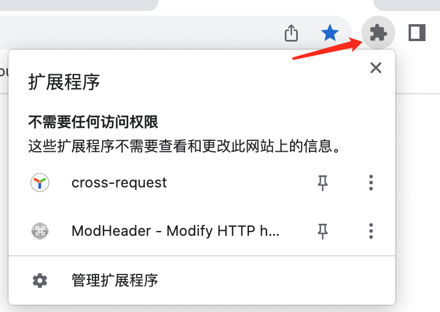
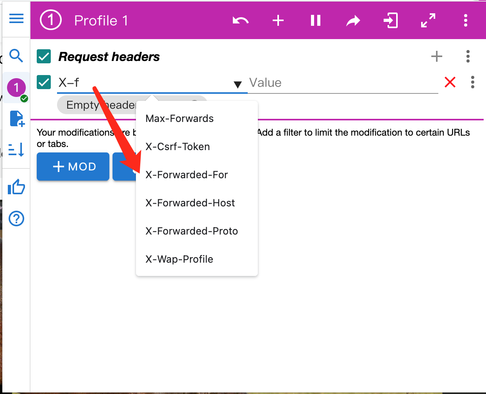
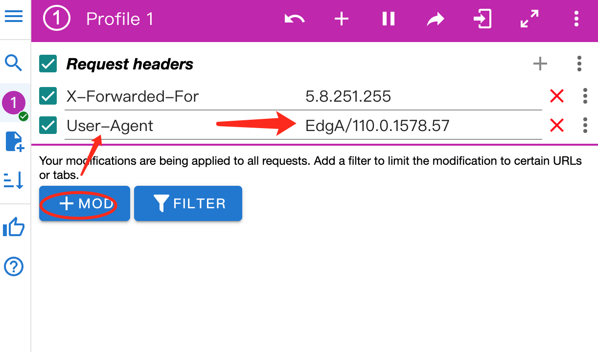
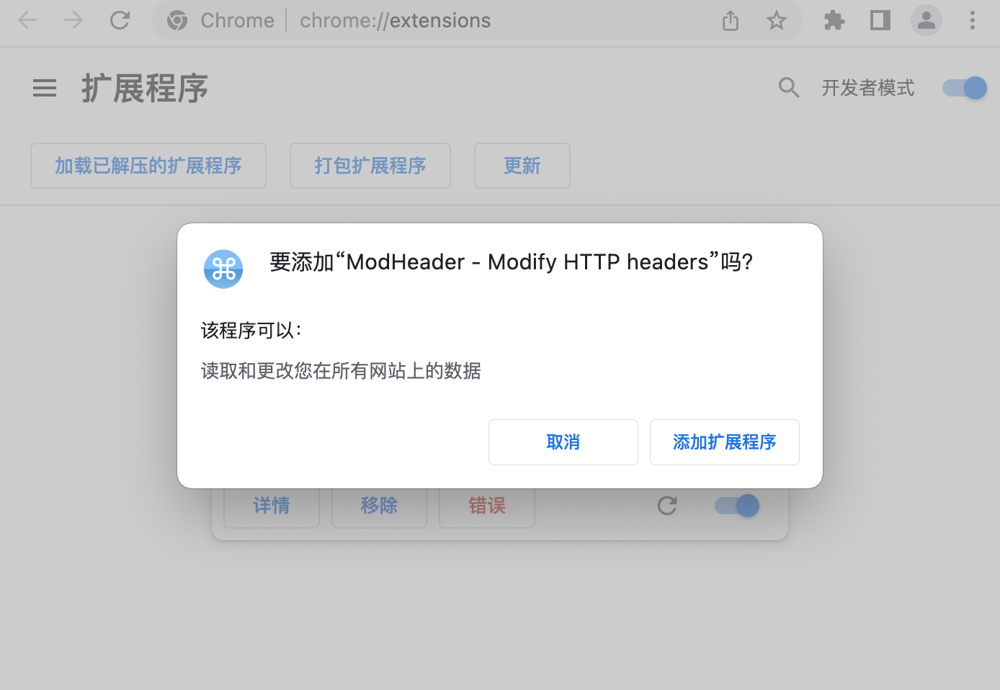

title: 科学上网2date: 2019-06-19 18:02:45categories:
[TOC]
Chrome插件之ModHeader
插件下载地址：
插件安装问题：
插件的使用：

newbing上的使用
X-Forwarded-For 5.8.251.255
假装请求是从上面这个ip转发过去的。
输入X-选中选项

User-Agent EdgA/110.0.1587.54

更多参考资料：

https://www.bing.com/?mkt=zh-CN
https://www.bing.com/?mkt=en-US